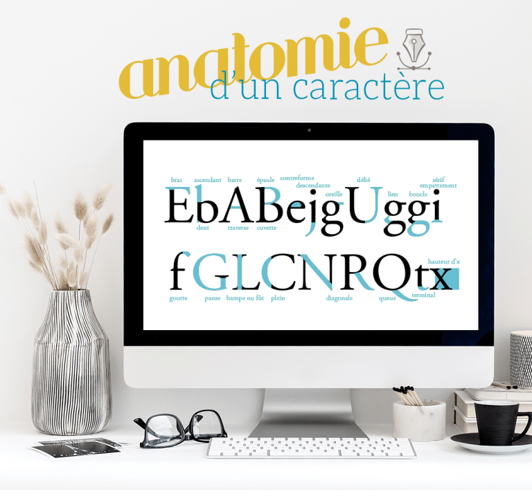
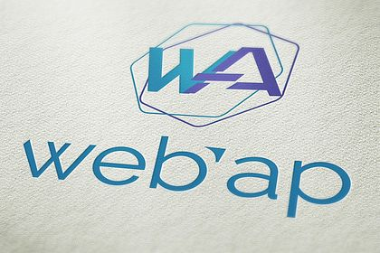
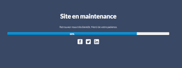

Pour la conception d’un design web comme celui ci,
nous tenons compte des contraintes spécifiques du support Internet, notamment en termes d’ergonomie, d’utilisabilité et d’accessibilité.
Le design est le processus de collecte d’idées, d’organisation et de mise en œuvre esthétiques, guidé par certains principes dans un but précis.
Le design Web est un processus de création similaire, avec l’intention de présenter le contenu sur des pages Web électroniques,
auxquelles les utilisateurs finaux peuvent accéder via Internet à l’aide d’un navigateur Web. //
For the design of a web design like this,
we take into account the specific constraints of Internet support, particularly in terms of ergonomics, usability and accessibility.
Design is the process of collecting ideas, organizing and implementing aesthetics, guided by certain principles for a specific purpose.
Web design is a similar creative process, with the intention of presenting content on electronic web pages,
that end users can access over the Internet using a web browser.
lien du projet

Ce projet est une mise en place d'une application pour rendre plus facile l'integration .
Miro est un outil qui vous permet de créer visuellement n’importe quel projet grâce à ses tableaux,
et ce de façon illimitée. Puisqu’il s’agit d’une application web, vous pouvez gérer vos visuels à distance,
en y ajoutant des post it ainsi que des tous types de fichiers (images, vidéos, excel, etc…).
L’avantage de Miro est qu’il permet de communiquer simplement grâce à ses outils de chat, de commentaires
et de visioconférences.//
This project is an implementation of an application to make integration easier.
Miro is a tool that allows you to visually create any project thanks to its tables,
and unlimited. Since it is a web application, you can manage your visuals remotely,
by adding post it notes as well as all types of files (images, videos, excel, etc.).
The advantage of Miro is that it allows you to communicate simply thanks to its chat tools, comments
and videoconferences.
lien pour maintenance

Ce projet consacré a la maintenance de site prend en compte les deux phases importantes a savoir :
L’entretien technique : mises à jour de sécurité, d’extensions, de scripts, de performances…
La gestion du contenu : mises à jour des contenus obsolètes, liens cassés, pages inutiles… //
This project dedicated to site maintenance takes into account the two important phases, namely:
Technical maintenance: security updates, extensions, scripts, performance…
Content management: updates of obsolete content, broken links, useless pages, etc.
lien pour maintenance